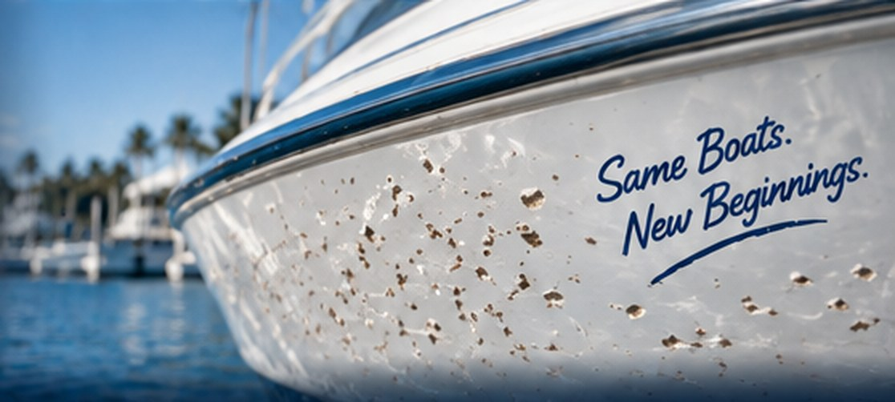
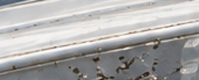
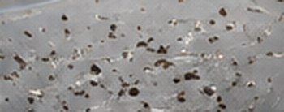
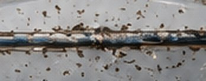
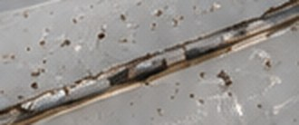
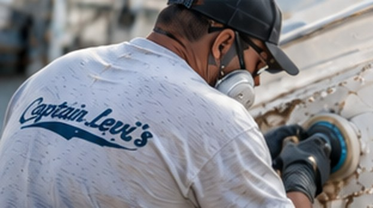

Multiple gelcoat chips and pitting can make your boat look old, dull and worn. We professionally repair and blend these areas to restore a smooth, uniform finish and protect the fiberglass from further damage.
Repeated chips, pitting and widespread surface damage can make your gelcoat look chalky and worn. We repair and fill the damaged areas, sand and blend the gelcoat, and match the exact color so your boat looks smooth, glossy and uniform again.



Repeated chips and pitting below or along the waterline from debris and bumpers.
Learn More
Chips and pitting around cleats, rails, corners and frequently used areas.
Learn More
We evaluate the extent of the pitting and chips and determine the best repair method.
We fill the damaged areas with marine-grade gelcoat, building the surface smooth.
We match your exact gelcoat color for a seamless blend with the surrounding finish.
We wet sand, polish and refine the surface to a durable, glossy, like-new finish.
See real examples of multiple chip and pitting repairs we’ve completed for boaters across Tampa Bay.
With over 50 years of fiberglass repair experience, we deliver high-quality results that keep your boat looking its best. From small chips to full cosmetic restorations, we’re the team boaters across Tampa Bay trust.
It depends on how large the affected area is, how deep the pits go, where they are on the boat and how hard the color is to match. A few scattered chips cost far less than refinishing a whole hull side. Send us photos or book an inspection and we’ll give you a firm quote before any work starts.
The goal is that they aren’t. We fill each chip and pit slightly proud, sand the whole area flush, then wet sand and polish until the gloss and texture match, so the repaired area reads as one even surface.
A small area is often done in one to two days, mostly for cure time between filling and finishing. Widespread pitting across a hull side or transom takes longer; we give you a timeline with the quote.
Yes. We tint the gelcoat to your boat as it is today, not to the factory color code, because sun and age shift the original shade. We test the match on the hull before we apply it.
They can. Every pit that reaches the laminate lets water and UV in, which leads to oxidation, staining and eventually blistering or delamination. Filling and sealing them early is far cheaper than repairing the laminate later.
Get a free quote or talk directly with Captain Dave about your repair.
Have chipped or pitted gelcoat you want looked at, need a quote, or ready to schedule? Fill out the form or give us a call — we’ll get back to you as soon as possible. Your boat deserves the best, and we’re here to make it happen.
Tell us a little about your project and we’ll get back to you quickly.